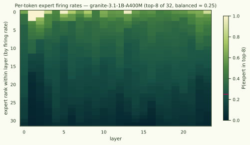
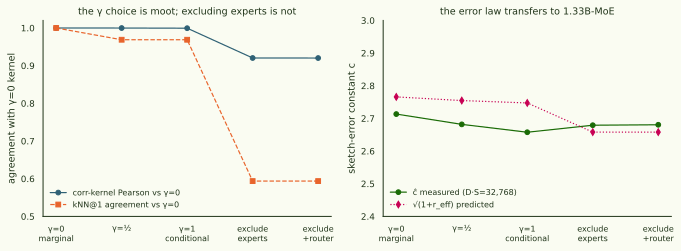

Preconditioning a Mixture-of-Experts: γ is moot, experts are not embeddings, and the clusters aren't the router
A MoE expert's weights only get gradient when the router fires it — the expert-granularity version of the embedding-row problem the error-law study closed with "freeze them out". But experts are 90.5% of granite-3.1-1B-A400M's parameters; freezing them out is not a rounding decision. And the preconditioner choice is genuinely open: should a coordinate have unit variance marginally (q = 1/(v+ε), the Adam convention — rare experts get IDF-like upweighting) or conditioned on firing (q = freq/(v+ε·freq) — every firing is an ordinary event)? We parameterised the family as qγ = freqγ/(v + ε·freqγ), measured instead of arguing, and ran the full pipeline — census, exact-kernel geometry, sketch-error law, conductance clustering, LLM-judged goodness, router purity — on .
The γ choice barely exists: per-token-loss expert gradients are only soft-sparse (median coordinate fires on 99% of rows), so γ = 0 and γ = 1 kernels agree at Pearson 0.9994. Excluding experts is NOT free: 41% of nearest neighbours flip, and at the cluster level the two conventions discover near-disjoint structure. Neither clustering is the router in disguise.
§1 Census: the sparsity you expect isn't the sparsity you get
The whole marginal-vs-conditional debate presumes expert gradients are mostly zero. For per-token loss gradients they are not: the loss at one position backpropagates through every position's residual contributions, so an expert that fires anywhere in a 512-token window gets gradient from context mixing. Measured over 1,024 per-token gradients: median expert-coordinate activation frequency 0.99; the hard-sparse story survives only in a dead-expert tail (p1 ≈ 0.13 firing rate). Kurtosis is another matter — κ p50 ≈ 140 on expert coordinates (vs ~507 on the tied embedding), so second-moment estimation needs its sample budget even though zeros are rare.

§2 Kernel geometry: γ is a non-choice; excluding experts is a real one
Thirty-two exact per-token gradient rows (full 1.33B coordinates, 160 GB materialised once), re-preconditioned under each variant:
| variant | reff | Pearson vs γ=0 | kNN@1 | top-8 angle | ĉ@32k vs √(1+reff) |
|---|---|---|---|---|---|
| γ = 0 (marginal) | 6.65 | 1.0000 | 1.000 | 0° | 2.71 / 2.77 |
| γ = ½ | 6.59 | 0.9998 | 0.969 | 1.9° | 2.68 / 2.75 |
| γ = 1 (conditional) | 6.55 | 0.9994 | 0.969 | 3.5° | 2.66 / 2.75 |
| exclude experts | 6.07 | 0.9203 | 0.594 | 4.6° | 2.68 / 2.66 |
| exclude + router | 6.07 | 0.9202 | 0.594 | 4.6° | 2.68 / 2.66 |

§3 Clustering at 1.33B: two conventions, two different discoveries
The pipeline's largest clustering to date: 51,100 per-token rows (100 Pile sequences), D·S = 16,384 sketches under two preconditioners — γ = 0 (experts in) and exclude-experts — then the same conductance discovery as the 14M pilot (ε = 1e-5, 800 attempts, min size 20). γ0 finds 325 clusters covering 54.5% of rows; the exclude arm fragments finer — 451 clusters, 81.4% coverage. And they are near-disjoint: median best-Jaccard 0.13 (γ0→noexp) / 0.27 (noexp→γ0), with only 1.5% / 6.4% of clusters re-found at Jaccard ≥ 0.5 (ARI ≈ 0). This is the third instance of the same lesson — 14M embeddings in/out, MoE experts in/out — parameter-inclusion conventions select what conductance clustering discovers, at every scale we've tested.
Judge goodness (detection protocol, claude-sonnet-5, seeded 120-cluster samples, zero skips): γ0 mean balanced accuracy 0.665 (median 0.625, 12.5% above 0.9), exclude-experts 0.568 (median 0.525, 4.2% above 0.9). Both sit well below the 14M no-embed arm's 0.872 — a real scale/model effect to take seriously (fewer rows, a stronger model, and plausibly subtler structure than a 14M kernel's token-surface clusters), not a pipeline regression: the judged examples include perfect-1.0 clusters in both arms.
§4 Router purity: the clusters are not the router
The marginal convention's predicted failure mode (H-marg) was that rare-expert upweighting would make "which expert fired" the dominant similarity — clusters as routing table. Measured per layer as adjusted MI between cluster labels and top-1 expert assignment, against a shuffle null: γ0 max excess 0.102 (layer 8; mean over layers 0.065), exclude-experts max 0.053 (mean 0.035). Both are far from routing-dominated — the kernel's communities are content structures that happen to live in expert weights, not expert labels. H-marg is dead on this model; combined with §2, the practical recommendation is: keep the experts, use γ = 0, don't spend a thought on γ — and if you exclude experts, know that you are choosing a different (finer, higher-coverage, equally content-driven) clustering, not a cheaper copy of the same one.
The maps below show every cluster in each arm, laid out by inter-cluster kNN edge mass exactly like the pilot's map — hover any cluster for five member examples with the predicted-at token [highlighted], same-cluster window tokens shaded, and kNN-adjacent tokens in pale gold (the SAE-style view: multi-token features appear as contiguous runs).
- model
- ibm-granite/granite-3.1-1b-a400m-base — P = 1,334,625,280 (~430M active), 24 layers, 32 experts top-8, fused 3D expert tensors (90.5% of P), tied embeddings
- data caveat
- probe corpus is pile-10k — NOT granite's (proprietary) pretraining mix, unlike the Pile-trained Pythia studies; rows are the corpus prefix (first 100 packed blocks ≈ 50–100 documents, unshuffled loader), so rows are document-autocorrelated and the inventory partly reflects which documents lead the stream
- census
- 1,024 per-token gradients, per-coordinate freq/κ/moments (E1); router census 51,100 rows, top-8 assignments per layer, density check exact
- variants
- qγ = freqγ/(v+ε·freqγ), γ ∈ {0, ½, 1}, exclude-experts, exclude+router; 32 exact rows (160 GB) re-preconditioned per variant; sketched at D·S ∈ {8,192, 32,768}
- clustering
- 51,100 rows × 2 arms, D·S = 16,384, pilot discovery config (εPPR 1e-5, cap 800, min 20); ~17–36 s per PPR attempt at this graph density — discovery, not sketching, is the wall at 1.33B
- scoring
- detection protocol, claude-sonnet-5, seeded 120-cluster samples per arm, zero skips
- purity
- per-layer adjusted MI(cluster, top-1 expert) vs 20-draw shuffle null, size-weighted purity; script smoke-tested on planted structure (excess 0.82 planted / −0.002 null)
scripts/make_moe_cluster_map.py; purity scripts/moe_router_purity.py).
Artefacts · HF arcadia-impact/gradient-kernel-moe-granite-20260714 (census, variant kernels, both cluster runs with graphs/reports/scores, purity, comparison, maps).
Compute · gk-410m A100 PCIe, ≈$85 over 2.5 days (census 1h · E2 materialise+variants 2h · sketches 2×~5.5h · discovery 2×~4–8h); the 160 GB raw-row matrix is regenerable in 12 min and was not archived.